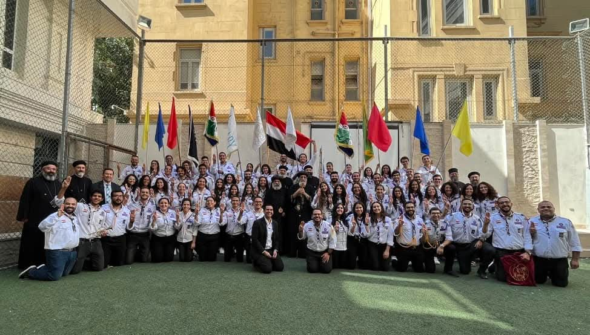
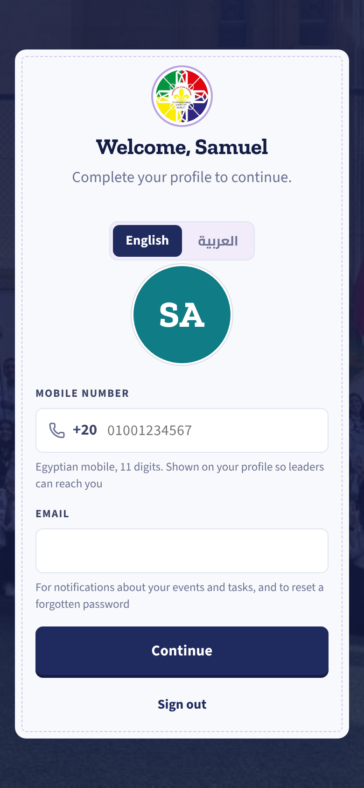
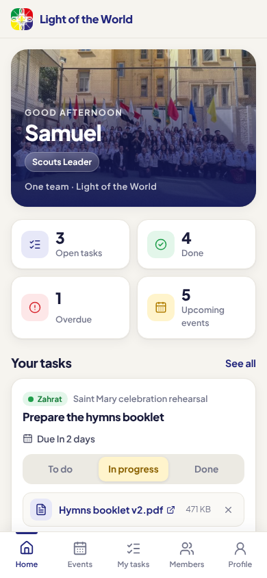
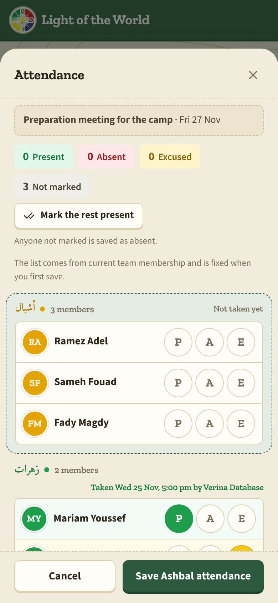
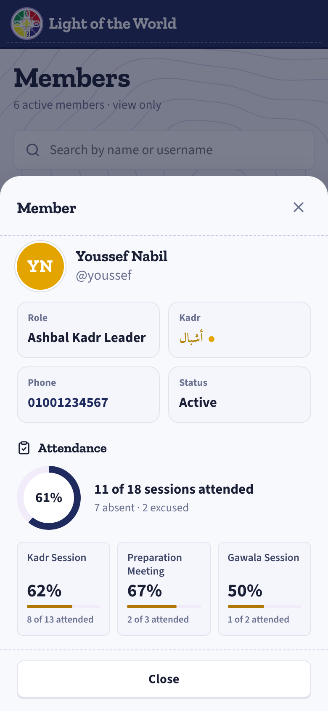

“Light of the World” is a web app where the 60 leaders of the Gawala kadr plan events, share out tasks, take attendance and keep task materials in Google Drive. It is built and working; it now needs the real member accounts and hosting before the whole kadr uses it.
The app is designed for phones first and also works on a computer. It can be added to a phone’s home screen like an app. Every member belongs to one kadr; the Group Leader, the Group Leader Helpers and the Database / Attendance team belong to Gawala.
All the basic operations planned for the first version are built, plus attendance, file review, member profiles and email notifications.
Username and password, stays signed in for 7 days, blocks repeated wrong guesses. “Forgot password?” emails a reset link.
Asks for an Egyptian (+20) mobile number and an email before the app opens.
Create, edit and delete; Upcoming and Past tabs; grouped by month; filter by kadr.
Kadr Session, Preparation Meeting, Gawala Session and Others, each with its own rules.
Assigned to a leader with a due date; To do, In progress, Done; overdue tasks in red.
PDF, Word or image up to 25 MB. A leader reviews it, then it is saved to Google Drive by kadr and event.
Present, Absent or Excused per member, taken only by the assigned Database member.
List with attendance %, details view, and account management for the Database team.
In Arabic and English: a new event for your kadr, a task assigned to you, your file approved or sent back.
Mobile number, email and which emails you get, attendance rate, password, and English or Arabic.
A member’s role decides what they can do; their kadr decides which events they work on and whose attendance sheet they appear on. Every rule is checked by the server, so it cannot be bypassed from outside the app.
| Role (count) | Events and tasks | Preparation Meetings | Attendance | Members page |
|---|---|---|---|---|
| Group Leader (1) | Every kadr and Gawala Sessions | Any kadr | View only | View all |
| Group Leader Helper (2) | Every kadr and Gawala Sessions | Any kadr | View only | View all |
| Database / Attendance, privileged (2) | Every kadr and Gawala Sessions | No | Takes it for one assigned kadr | View, add, edit, deactivate all |
| Database / Attendance, others (3) | Own kadr | No | Takes it for one assigned kadr | View, add, edit, deactivate their assigned kadr |
| Kadr Leader (5) | Own kadr | Own kadr | View only | No |
| Kadr Leader Helper (about 47) | Own kadr | No | View only | No |
| Type | Belongs to | Attendance sheet | Tasks |
|---|---|---|---|
| Kadr Session | One kadr | That kadr’s members | Yes |
| Preparation Meeting | One kadr | That kadr’s members | No |
| Gawala Session | The whole group | All kadrs, grouped by kadr | Yes |
| Others | One kadr or the whole group | No attendance | Yes |
Accounts are created by the Database / Attendance team; there is no self sign-up.
| Tab | What it shows |
|---|---|
| Home | Open, done and overdue tasks, your next tasks, upcoming events |
| Events | Upcoming and past events you can see, grouped by month |
| My tasks | Everything assigned to you, nearest due date first |
| Members | Only for the Group Leader, Helpers and the Database team |
| Profile | Mobile, attendance, password, language |
Forgot your password? Tap Forgot your password? on the sign-in screen: a link to choose a new one is emailed to you.


Read the part for your role. Everyone also uses “Doing your tasks” above.
Each of the five members takes attendance for one fixed kadr: Ashbal, Zahrat, Kashafeen, Morshedat or Gawala. Your kadr is shown on your Profile.


The app uses the MERN stack and runs as one Node.js website with a MongoDB Atlas database. Setup steps are in the repository’s README.
Five steps take the app from built to used by all 60 leaders.
Planned next: KPIs for members and kadrs, once the access rules for them are decided.
فَلْيُضِئْ نُورُكُمْ هَكَذَا قُدَّامَ النَّاسِ، لِكَيْ يَرَوْا أَعْمَالَكُمُ الْحَسَنَةَ، وَيُمَجِّدُوا أَبَاكُمُ الَّذِي فِي السَّمَاوَاتِ.
إنجيل متى 5: 16